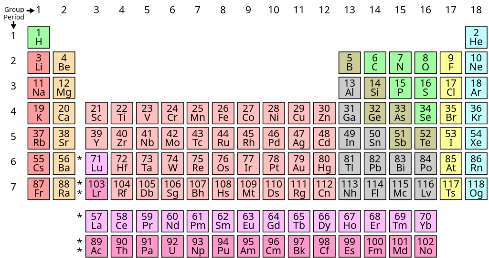

Pada 21 Oktober 2016, rakyat Malaysia dikejutkan dengan kejadian letupan belon pada acara perasmian Walk For The Blind menyebabkan lebih kurang 30 orang tercedera (Berita Harian, Sinar Harian). Kejadian ini tidak dijangkakan kerana kepercayaan bahawa belon berisi gas Helium yang digunakan secara komersial itu selamat apatah lagi ia biasa digunakan sebagai permainan kanak-kanak. Apa yang sebenarnya tidak dijangkakan ialah belon itu sebenarnya diisi dengan gas Hidrogen. Ini bukan satu kes terpencil kerana ia juga pernah berlaku berulang kali lebih kurang seabad yang lalu.
Kupasan Ilmu Kimia
Kedua-dua gas Hidrogen dan Helium terapung di udara maka kedua-duanya sesuai dimasukkan ke dalam belon. Namun, apa yang membezakan dua gas ini adalah tindak balas kimia mereka.

Jadual berkala unsur kimia. (Lesen Domain Awam)
{kind=link}
Jadual berkala memberikan gambaran tentang sifat kimia dan sifat fizikal tanpa mengetahui sifat mereka yang sebenar. Hal ini boleh dilakukan dengan melihat sifat-sifat unsur yang berhampiran. Sifat kimia sesuatu unsur boleh digambarkan dengan melihat kepada unsur-unsur dalam satu kumpulan manakala sifat fizikal boleh dibandingkan dengan melihat kepada unsur-unsur dalam satu kala.
Apa yang menyebabkan letupan, kebakaran dan macam-macam tindakan kimia yang lain adalah bergantung kepada sifat kimia sesuatu unsur. Maka, eloklah kita perhatikan sifat kimia mereka.
Hidrogen (H) terletak dalam kumpulan satu (kumpulan logam alkali). Kumpulan logam alkali sangat reaktif termasuk Hidrogen. Malah, Litium (Li), Natrium (Na) dan Kalium (K) boleh terbakar dan meletup apabila didedahkan kepada air. Lihat video ini:
(Nampaknya videonya telah dipadam oleh pemilik. Kalau ada contoh lain, akan dimasukkan)
Berbeza pula dengan Helium (He) yang terletak dalam kumpulan 18 (kumpulan gas adi). Unsur-unsur dalam kumpulan ini tidak akan bertindak balas dengan mana-mana unsur lain melainkan berada dalam suhu dan tekanan yang sangat-sangat tinggi. Oleh sebab itu juga, gas-gas adi hanya wujud dalam bentuk gas dalam suhu dan tekanan yang biasa (baca berkaitan Helium Cecair untuk sedikit kelainan dari sifat gas adi biasa).
Setelah membandingkan kedua-dua unsur ini, maka logiklah untuk mengatakan yang belon yang meletup pada kejadian itu tidak mungkin diisi dengan gas adi Helium. Hidrogen mempunyai ciri fizikal yang sama dengan Helium (terapung) maka itulah kemungkinan yang pasti.
Kejadian Kapal Udara LZ-129 Hindenburg
Gambar kapal udara LZ-129 Hindenburg di Stesen Udara Tentera Laut AS pada tahun 1936. (Imej Domain Awam)
{kind=link}
Pernah satu ketika pada 6 Mei 1937, kapal udara LZ-129 Hindenburg dari Jerman terbakar semasa mendarat di New Jersey, Amerika Syarikat. Kejadian itu mengambil nyawa 35 orang yang berada dalam kapal udara tersebut. Ia adalah kes kebakaran yang paling diingati sebab ia sempat disiarkan secara langsung dalam rakaman hitam putih. Menurut pakar, kebakaran itu berlaku disebabkan pelepasan cas elektrik (yang terkumpul semasa penerbangan) yang terkena hidrogen bocor.
Lihat video kejadian itu:
Sebenarnya, ini bukanlah satu-satunya kes kebakaran kapal udara kerana hidrogen. Ada banyak lagi yang pernah berlaku sebelumnya. Namun, kegunaan Hidrogen sebagai pengangkat kapal udara telah dikurangkan sehingga lenyap sepenuhnya pada hujung 1930-an.
Kalau Dah Tahu Hidrogen Mudah Terbakar, Kenapa Pakai?
Gas Hidrogen adalah gas yang sangat ringan berbanding Helium. Hidrogen juga dijual dalam harga yang lebih murah. Maka, kos pembinaan kapal udara boleh dikurangkan dengan banyak.
Tambahan pula, Amerika Syarikat iaitu satu-satunya tempat bergantung harap bekalan gas Helium pada zaman tersebut tak mahu menjual gas tersebut kepada Jerman. Maka, satu-satunya cara untuk negara Jerman menerbangkan kapal udara adalah dengan menggunakan Hidrogen. Tidak hairan jugalah kebanyakan kebakaran kapal udara adalah milik Jerman (LZ bermakna Luftschiff Zeppelin iaitu sebuah syarikat Jerman).
Konklusi?
Kejadian di Terengganu itu mungkin berlaku sebab ada pihak yang tidak bertanggungjawab mengisi gas Hidrogen ke dalam tong yang diletakkan di bawah nama ‘Gas Helium’ kerana 1) ia lebih murah dari segi kos dan 2) mereka berharap penganjur program tak dapat membezakannya. Itu hanyalah spekulasi berdasarkan teori saintifik. Namun, ada satu perkara pasti: Mereka yang tidak mengenali sejarah pasti akan mengulanginya.